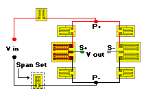

Span Set
Span SetCircuit Refinements command
General Considerations
This program calculates a fixed value resistor (low TCR) to be inserted in a bridge power lead for the purpose of adjusting (decreasing) transducer span to a desired level.

Inputs
 Measured Span
Measured Span
Bridge output at test load minus unloaded (zero) value. Span should be measured with Rmod/Rshunt resistors in place.
Bridge Resistance
Measured at P+/P- and does not include Rmod/Rshunt. If strain gages of essentially equal resistance are used in the bridge, bridge resistance equals gage resistance.
Total Rm Resistance
The total amount of Rmod resistors in use if no shunt resistors are employed. If Rshunt resistors are used, Total Rm Resistance equals the value of the Rmod/Rshunt parallel resistance value.
Desired Span
The span desired after insertion of the calculated span resistor.
 Error Messages
Error Messages
�The measured span must be greater than the desired span.�
Prevents entering a desired span which is larger than the measured span.
 Resistor Alloy
Resistor Alloy
Selecting from the drop-down menu provides a choice between constantan (A alloy), manganin, or modified Karma (K alloy) resistor alloys. With constantan alloy, B-pattern, D-pattern, and the wire table are available for use. For manganin alloy, only the wire table is available. For modified Karma, the D-pattern and wire table are available.
Solution
 Rspan
Rspan
The resistance value to be added to the bridge power lead(s) to reduce the measured span to the desired span level. As with span vs. temperature, the value for span set is often split equally between the positive and negative excitation leads.
Select
Select Rspan resistor type from the available choices.